Vendor & Site Setup (CBO)
How to bring a new Community-Based Organization (CBO) into ECMS: create its account, record its physical site, add a site contact, and give that contact a working vendor portal login.
Overview
Before a CBO can do anything else in ECMS — enroll a child, take attendance, submit a budget — it has to exist in the system as an Account, with at least one physical Site Master record and a Contact who can be provisioned with vendor portal access. This is internal, DOE-side setup work: it's normally done by an Operations Analyst (OA) or the ECMS Admin, working in the internal Salesforce app, not the vendor portal. Once this setup is complete, the CBO's own staff can log into the vendor portal and start doing their own work (budgets, enrollments, attendance, invoices).
Steps
1Open the Accounts list
DO Click the Accounts tab in the top navigation bar, then switch the list view to All Accounts so you can see every existing CBO, FCCN, and household account in the org.
RESULT The Accounts list view loads, showing every account with its billing city, phone, and type.
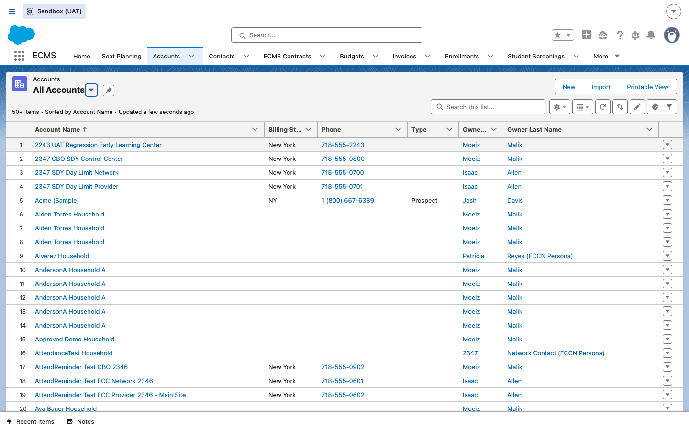
2Start a new CBO account
DO Click New. When prompted for a record type, choose Community Based Organization and click Next. Fill in the Account Name (the CBO's legal/DBA name), Vendor Tax ID, and billing address.
RESULT A "New Account: Community Based Organization" form opens with the fields specific to CBOs (Vendor Tax ID, MySchools ID, School DBN).
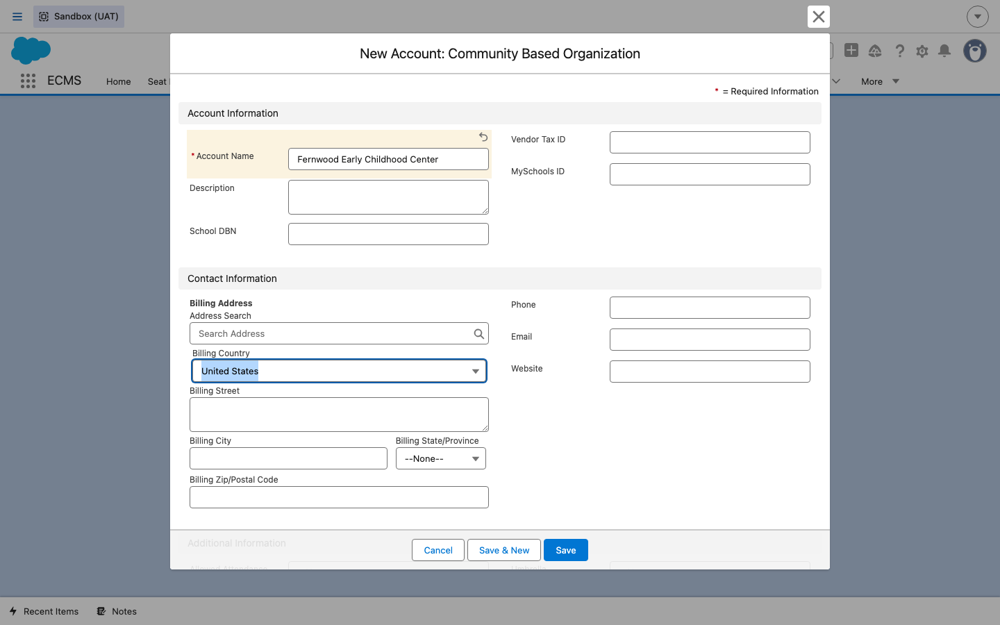
3Save the account
DO Click Save.
RESULT The Account record is created and you land on its detail page, with related-list quick links for Contacts, ECMS Contracts, Budgets, Invoices, and Sites Master — all empty until you fill them in during the steps below and in later guides.
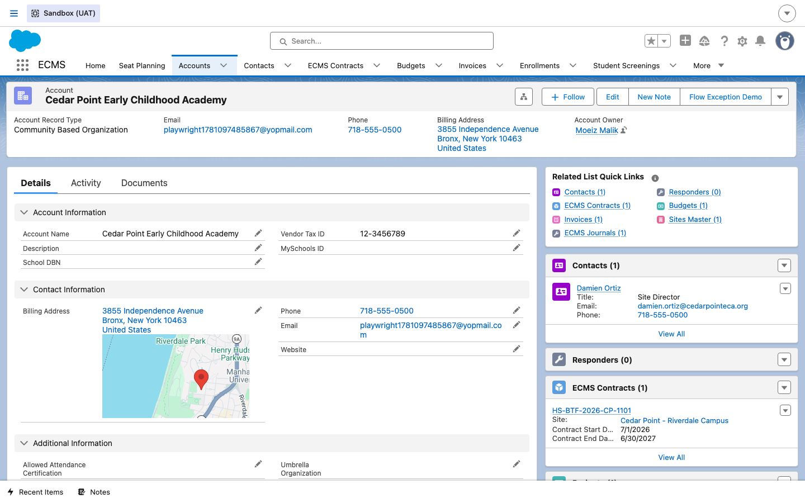
4Add the CBO's site
DO From the account's Sites Master related list, click New. Fill in the Site Master Name, and confirm the School/CBO lookup points back to the account you just created.
RESULT A "New Site Master" form opens, pre-linked to the parent CBO account.
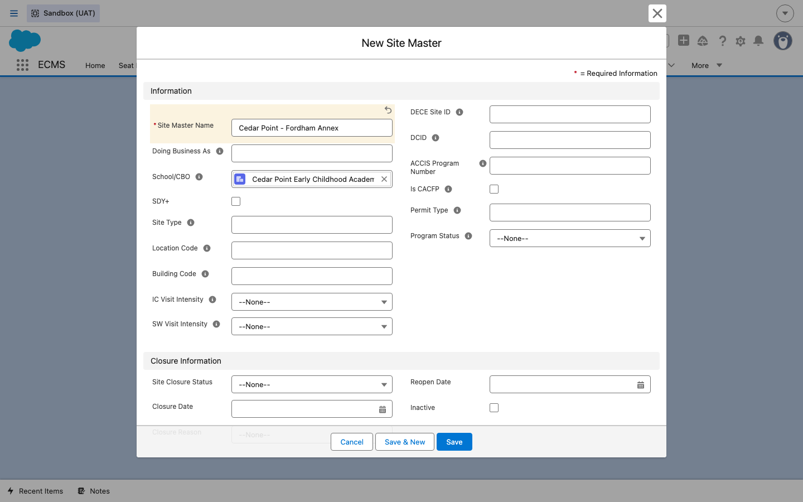
5Save the site
DO Click Save.
RESULT The Site Master record is created, showing Site Type, Borough, District, Site Closure Status (defaults to Active), and related lists for Site Staff, Enrollments, and Coaching Logs.
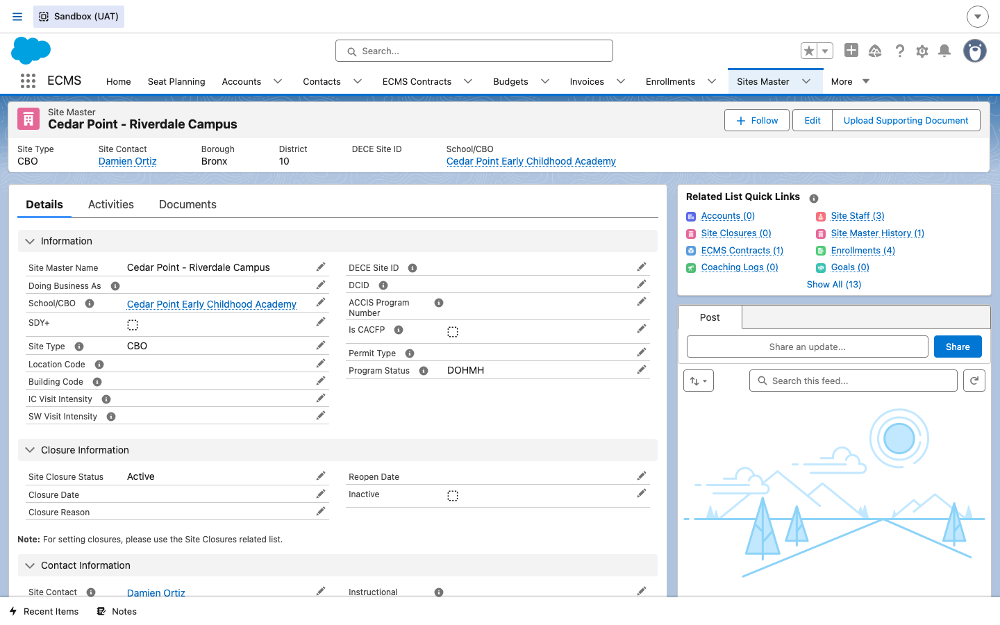
6Add a site contact
DO Go to the Contacts tab and click New, choosing the Staff record type. Fill in First Name, Last Name, Title (e.g. "Site Director"), and set Account Name to the CBO account.
RESULT A "New Contact: Staff" form opens with staff-specific fields (Qualification Attributes, Employee ID) in addition to standard contact fields.
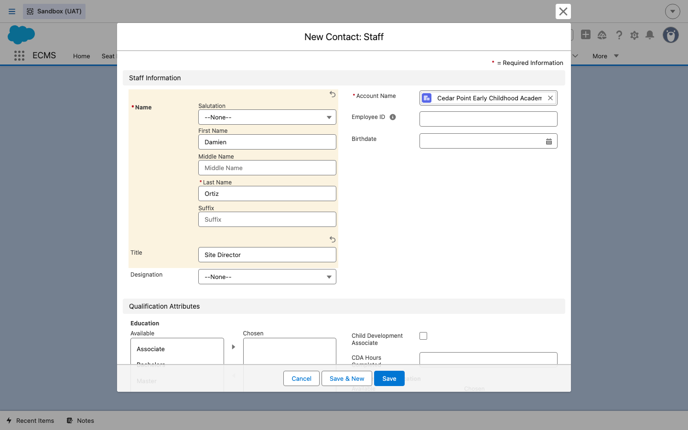
7Save the contact
DO Click Save.
RESULT The Contact record is created. Notice the extra action buttons that now appear: Provision Contact and Log in to Experience as User — both used in the next step.
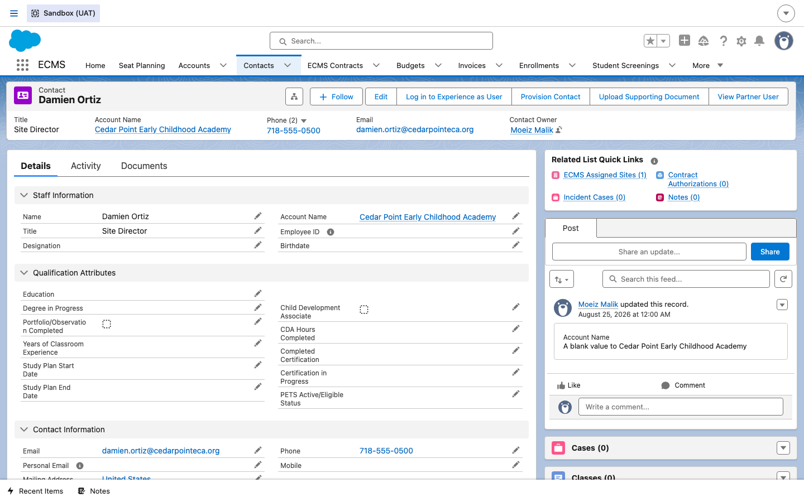
Go back and set this contact as the site's official Site Contact lookup on the Site Master record from step 5, if you haven't already — this is what makes them show up as the site's contact throughout ECMS.
8Provision vendor portal access
DO On the Contact record, click Provision Contact. On the first screen, check every ECMS function this person needs (Budget Management, Invoice Management, Enrollment Management, Attendance Management, etc.) and click Next. On the second screen, check the box for the site(s) they should have access to, then click Next.
RESULT The wizard shows the ECMS functions currently assigned to this contact, then the sites they're assigned to. Finishing the wizard is what actually creates their portal login and grants the matching permission sets.
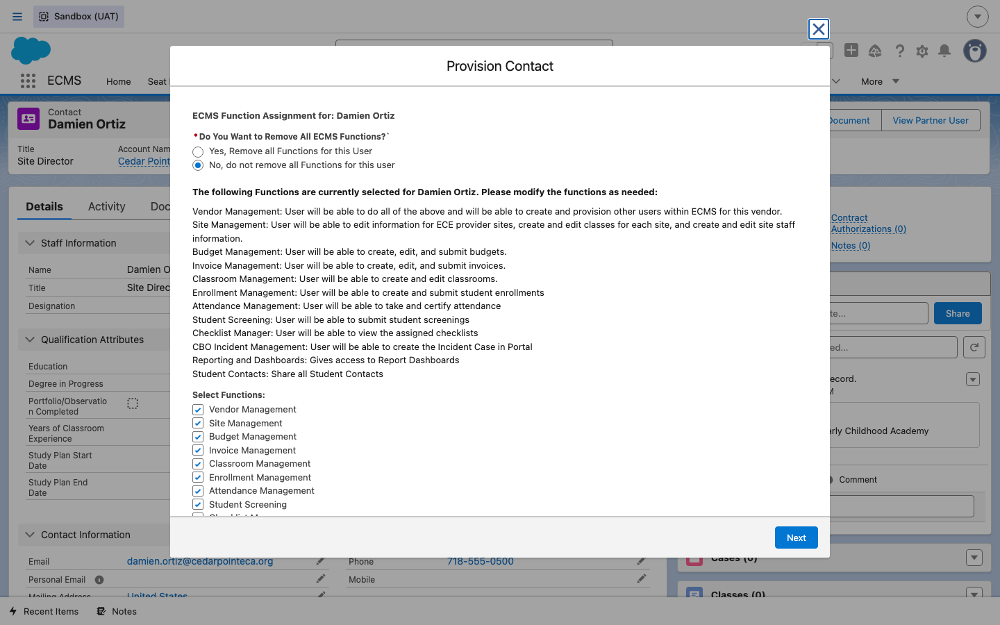
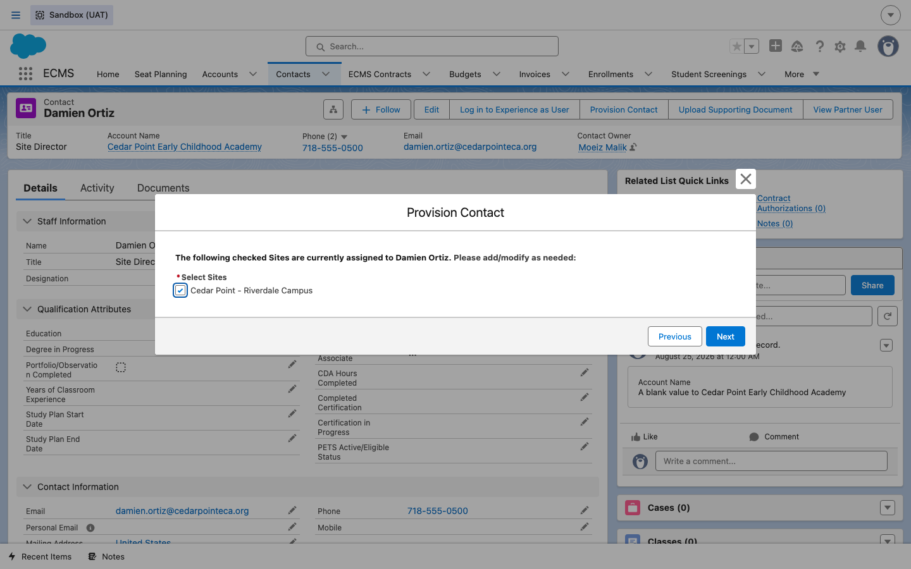
9Confirm the vendor's portal view
DO From the Contact record, click Log in to Experience as User to see exactly what this person sees when they log into the vendor portal themselves.
RESULT The vendor portal home page loads under the DOE-branded header, showing this user's name and CBO in the top-right corner and quick-action tiles for the functions they were provisioned with (Create Budget, Create Invoice, Create Enrollment, Report Incident).

Clicking Sites in the portal's top navigation confirms the site from step 5 is visible to this user, exactly as scoped in the Provision Contact wizard.
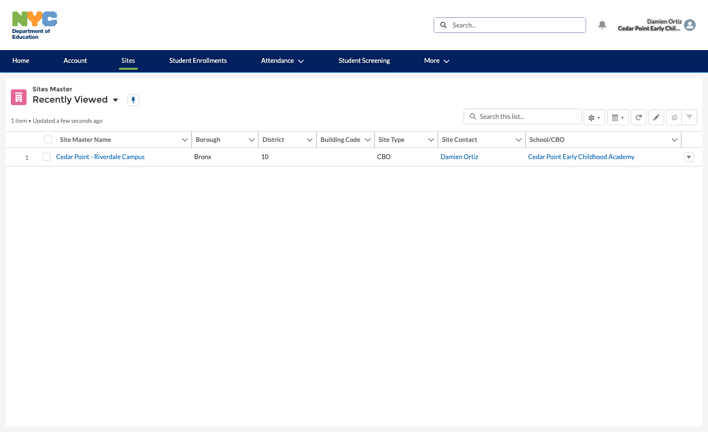
Site Closure & Reopen
Sites don't always stay open. A CBO may close a site temporarily (a repair, a licensing lapse) or permanently (the CBO stops operating there). ECMS tracks this on the Site Master record itself, and the closure state actively changes what the site is allowed to do downstream.
10Open a temporarily closed site
DO Open a Site Master record and scroll to its Closure Information section. Look at Site Closure Status, Closure Date, Closure Reason, and Reopen Date.
RESULT For a site with Site Closure Status Temporary Closure, the Closure Date and Closure Reason are populated, a Reopen Date is set (the CBO's expected reopening date), and the record's Inactive checkbox is turned on.
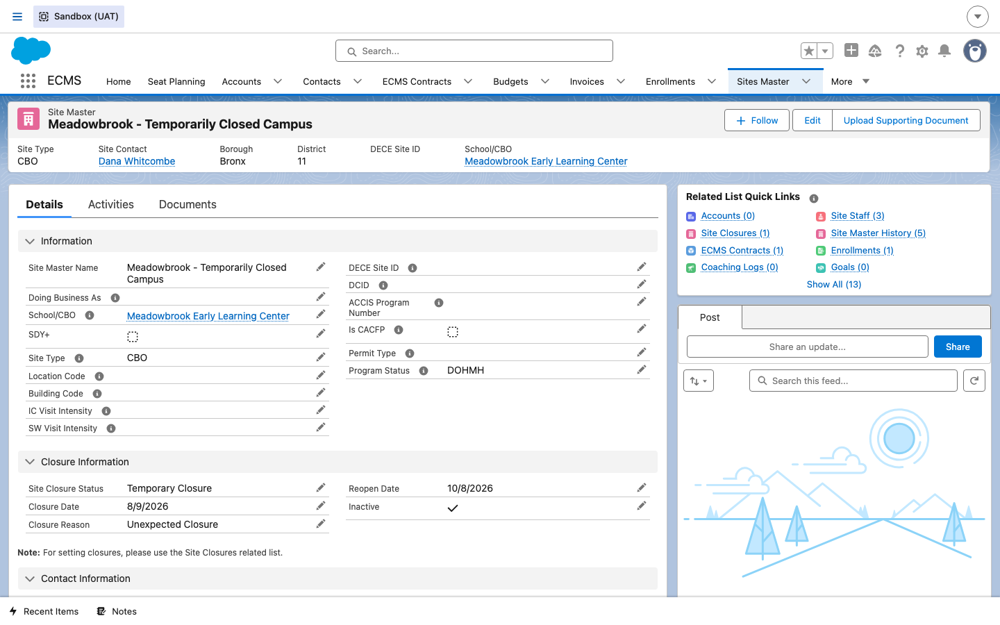
11Contrast a permanently closed site
DO Open a second Site Master record whose Site Closure Status is Permanent Closure and compare its Closure Information section to the temporary-closure example above.
RESULT Closure Date and Closure Reason are populated the same way, but there is no Reopen Date — a permanent closure isn't expected to come back.
12Confirm a reopened site
DO Open a Site Master record whose Site Closure Status has been moved to Reopened.
RESULT Closure Date, Closure Reason, and Reopen Date are all cleared, and the Inactive checkbox is unchecked again — visually, a Reopened site looks just like an Active one except for the status word itself.
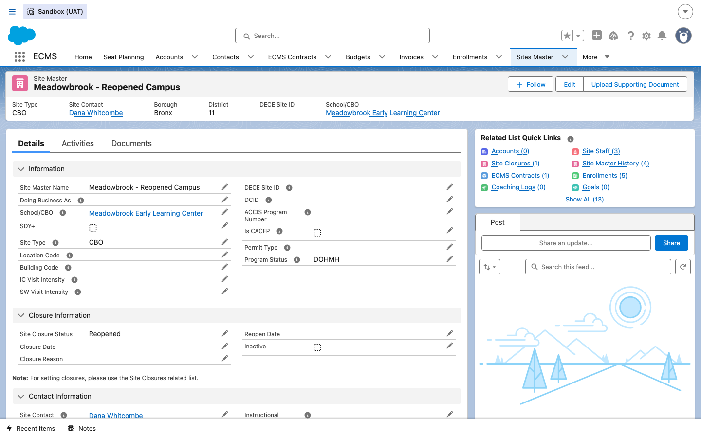
13Know what closure blocks downstream
DO Before troubleshooting a vendor's "why can't I submit this" report, check the site's Site Closure Status first.
RESULT Per BRD D01 (Site Management), while a site is Temporarily or Permanently Closed, Budget creation is blocked for that site and resumes automatically once it's Reopened. For a Permanently Closed site, Invoice submission is also blocked once the invoice period is past the site's closure month.
Vendor Staff Tracking
Beyond the single site contact created in step 6, a site typically has several Site Staff records — one per person working there, whether hired or a still-open vacancy. These records track each person's qualifications and employment history, and support attaching supporting documents.
14Open an existing Site Staff record
DO From a Site Master record's Site Staff related list, open one of the existing Site Staff records.
RESULT The Site Staff detail page loads, showing the staff member's name, linked Vendor Employee contact, Site, Site Staff Number, Staff Type, Designation, and Teacher Type, plus a Documents related list and a collapsed Qualification Attributes section.
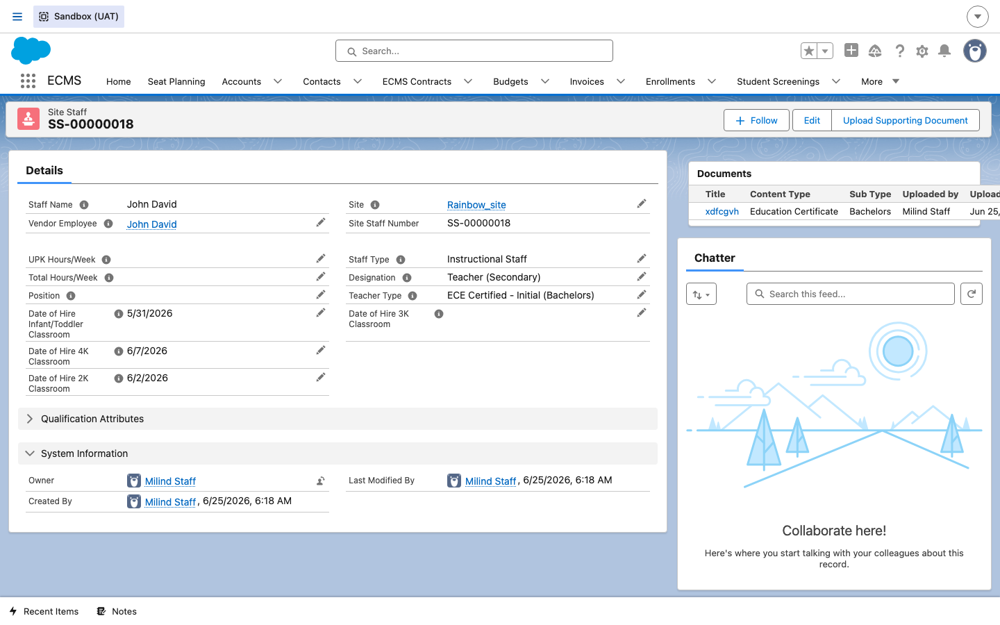
15Review qualification attributes
DO Click the Qualification Attributes section header to expand it.
RESULT The section expands to show Education (e.g. Associate), whether the person holds a Child Development Associate (CDA) credential, CDA Hours Completed, Years of Classroom Experience, any Degree/Certification in Progress, and Study Plan Start/End Date for staff working toward a credential.
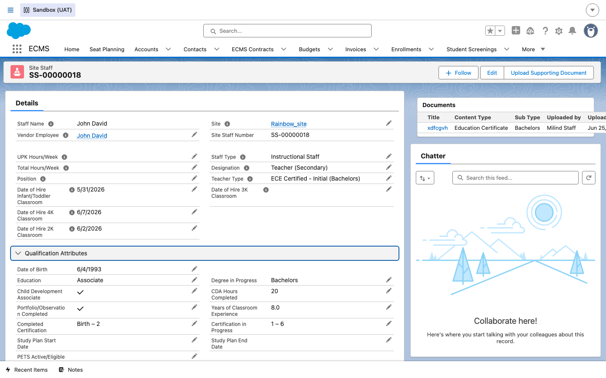
16Review & edit employment attributes
DO Click Edit on a Site Staff record to see its employment attributes — Staff Type (Site Contact, Administrative Staff, Instructional Staff, or Per Diem Staff), Designation (job title, including "Vacancy (…)" placeholder values for an unfilled position), Teacher Type, and the per-program Date of Hire fields (2K, 3K, 4K, Infant/Toddler classroom).
RESULT The edit modal opens with these fields editable alongside Qualification Attributes. Cancel out without saving once you've reviewed the layout — this is just to see what's editable, not to change a real record.
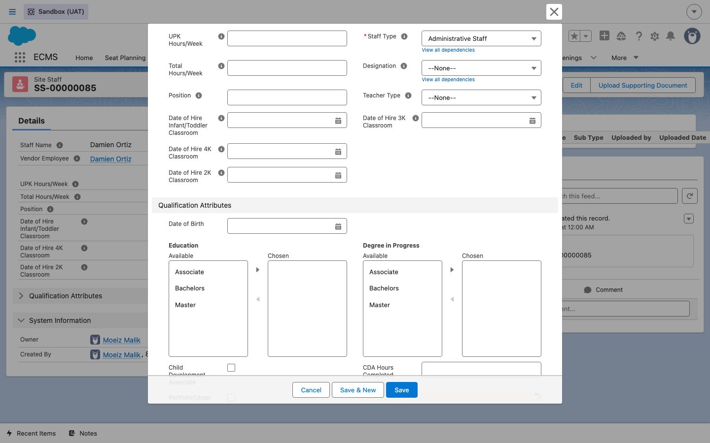
17Upload a supporting document
DO On the Site Staff record, click Upload Supporting Document. Give it a Title and choose a Content Type (Birth Certificate, Immunization Record, Teaching Certificate, Education Certificate, Study Plan, Certification, and others), then click Next to choose the file.
RESULT A wizard opens for attaching evidence of the qualifications recorded in step 15 — e.g. a Teaching Certificate or a Study Plan document. Uploaded files show up in the record's Documents related list, as seen on the record opened in step 14.
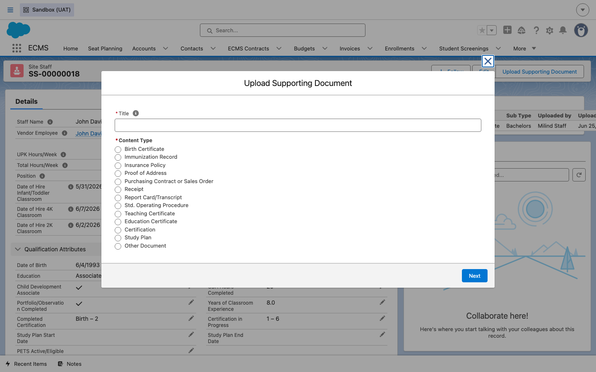
18Know where staff data rolls up
DO Keep Staff Type, Designation, and the qualification fields current on every Site Staff record — including vacancy placeholders.
RESULT Per BRD D02 (Vendor & Staff), these employment and qualification attributes across all of a site's Site Staff records roll up into the Budget Staff Vacancy Report, which is how DOE and the CBO track open positions and staffing qualifications without cross-referencing individual staff records one by one.